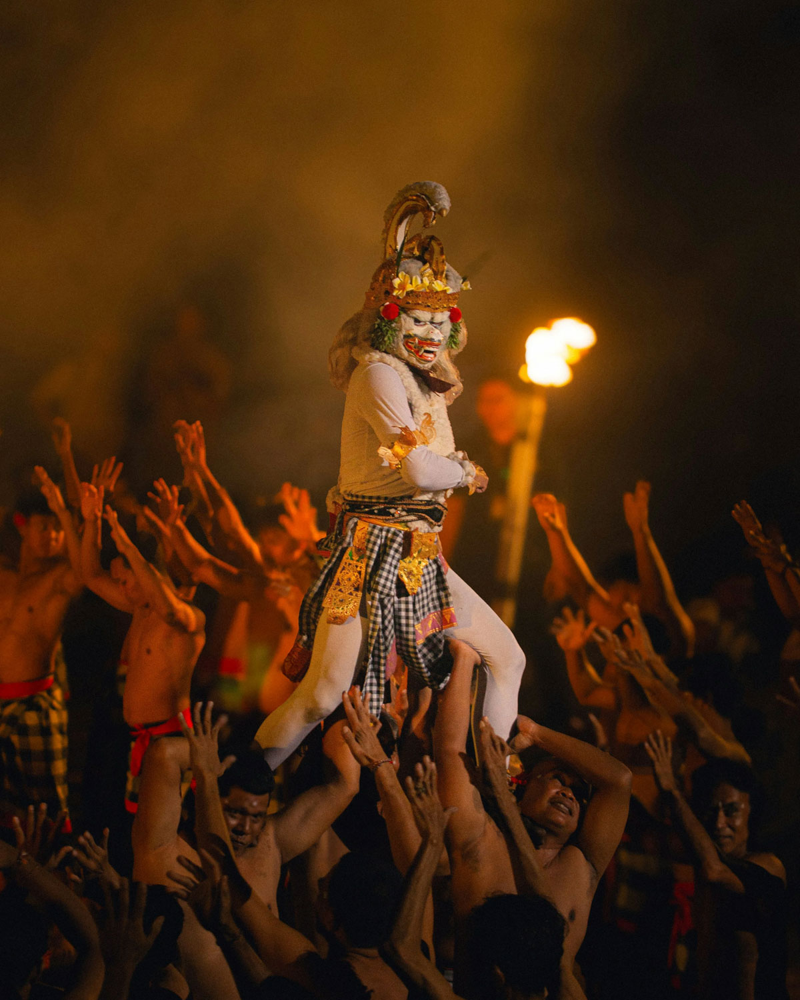

What You'll Do

Barong & Keris Dance
We open the day in Batubulan, where the Barong and Keris dance is performed every morning. The Barong - a lion-like guardian of good - faces the demon queen Rangda in an ancient battle of good against evil, set to a live gamelan orchestra and ending with entranced kris dancers. A dramatic, only-in-Bali way to start.

Ubud Arts & Crafts
Bali's craft traditions in one hands-on stop - the silver workshops of Celuk, a wax-and-dye batik studio, and the intricate Batuan painting style. Watch the artisans, try it yourself, and pick up a keepsake straight from the makers.

Pura Batuan Temple
A beautifully carved 11th-century village temple in Batuan, every gate and shrine covered in intricate paras-stone work. Cool, quiet, and rarely crowded - a calm heritage stop right on the road between the craft villages and Ubud.

Ubud Royal Palace & Art Market
Step inside Puri Saren Agung, the ornate home of Ubud's royal family and the beating heart of the town's arts scene. Just across the road, the traditional market is the place to browse handmade crafts, textiles, and souvenirs - your guide will help you get a fair price.

Kecak Fire Dance
We close the day with the Kecak - a circle of dozens of chanting men, no instruments, and a fire-lit retelling of the Ramayana as the sun goes down. Raw, powerful, and a fitting end to a full day of Balinese art and culture.